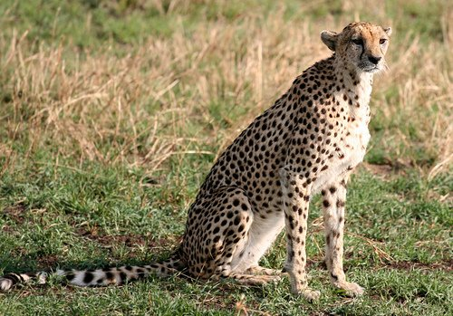
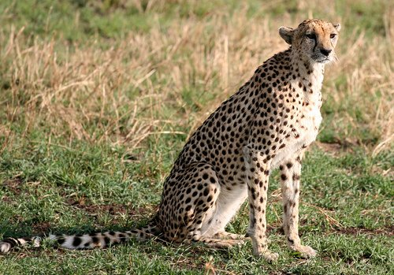
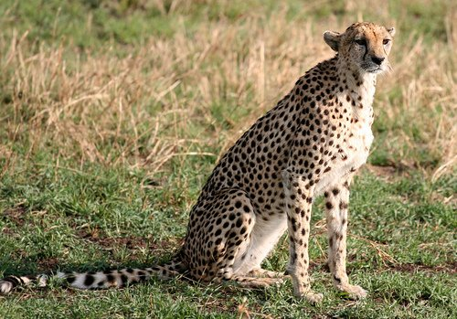

The cheetah (Acinonyx jubatus) is a big cat in the subfamily Felinae that inhabits
most of Africa and parts of Iran. It is the only extant member of the genus
Acinonyx. The cheetah can run as fast as 109.4 to 120.7 km/h (68.0 to 75.0
mph), faster than any other land animal. It covers distances up to 500 m (1,640
ft) in short bursts, and can accelerate from 0 to 96 km/h (0 to 60 mph) in three
seconds. The cheetah's closest extant relatives are the puma and jaguarundi of
the Americas. Cheetahs are notable for adaptations in the paws as they are one
of the few felids with only semi-retractable claws.
Their main hunting strategy is to trip swift prey such as various antelope species
and hares with its dewclaw. Almost every facet of the cheetah's anatomy has
evolved to maximise its success in the chase, the result of an evolutionary arms
race with its prey. Due to this specialisation, however, the cheetah is poorly
equipped to defend itself against other large predators, with speed being its main
means of defence. In the wild, the cheetah is a prolific breeder, with up to nine
cubs in a litter. The majority of cubs do not survive to adulthood, mainly as a
result of depredation from other predators. The rate of cub mortality varies from
area to area, from 50% to 75%, and in extreme cases such as the Serengeti
ecosystem, up to 90%. Cheetahs are notoriously poor breeders in captivity,
though several organizations, such as the De Wildt Cheetah and Wildlife Centre,
have succeeded in breeding high numbers of cubs.
The cheetah is listed as vulnerable, facing various threats including loss of habitat
and prey; conflict with humans; the illegal pet trade; competition with and
predation by other carnivores; and a gene pool with very low variability. It is a
charismatic species and many captive cats are "ambassadors" for their species
and wildlife conservation in general.
Cheetahs inhabit dry and open areas, such as clayey deserts, steppes,
savannahs and grasslands, acacia scrubs and light woodland. Most cheetahs
never enter dense forests or thickets except Asiatic cheetahs that lived in dense
forested regions in India. In Africa, cheetahs once occurred in these types of
habitat from the Mediterranean to the Cape Peninsula, and in Asia from the
northern Arabian Peninsula eastwards to the Deccan Plateau and West Bengal
in India. Until the first half of the 20th century, cheetahs were killed by sport
hunters and became scarce throughout their range. In South Africa they were
hunted to almost extermination by the 1930s. In Arabia, there have not been any
reliable records since the 1950s. The Qattara Depression in Egypt was
considered their last refuge by the 1960s. In India, they were declared extinct in
1952.
Since the 1950s, cheetahs were eradicated in at least 13 countries by farmers
and trophy hunters. Between 1978 and 1994, more than 9,500 cheetahs were
killed on Namibian farmlands alone. Today, cheetah populations are small and
isolated, with viable populations in about half of the countries where cheetahs
survive. Their remaining strongholds are in Kenya, Tanzania, Botswana and
Namibia. The remaining population of Asiatic cheetahs survives in fragmented
protected areas around the Dasht-e-Kavir in eastern Iran. In 2008, this
population was considered very small, comprising less than 50 reproducing
individuals.
